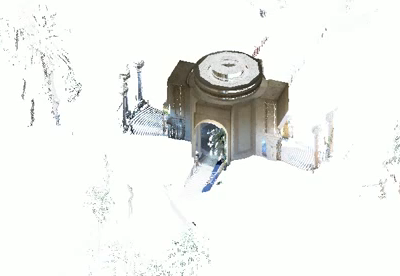

Point Cloud Feature Extraction
I discussed point cloud unit conversion just yesterday. We can immediately follow up with some more hot news on point clouds:
The free technology preview of a point cloud feature extraction tool for Revit has been released on Autodesk Labs. It allows you to work more easily with point clouds in Revit by automatically extracting useful geometry features from point clouds of buildings and creating basic Revit elements from them.
Tools Included
Point Cloud Feature Extraction for Autodesk Revit 2012 provides the following tools to facilitate the point cloud editing:
- Crop / Uncrop: Temporarily hide the points outside a rectangle or polygon
- Hide Point Cloud: Temporarily hide the whole point cloud object to facilitate the inspection of feature extraction results
- Adjust Axis: Transform the point cloud data so that a floor can be aligned with the XY plane and major walls are parallel to Z axis
Moreover, this plug-in includes some main features specifically for Revit so that the extracted features and geometry can be smoothly integrated into the BIM workflow:
- Datum Extraction: Extract both level and orthogonal grid
- Site Extraction: Extract both terrain surface for ground surface creation and building footprint on terrain surface for building pad generation
- Wall Extraction: Extract both straight wall layout and arc wall
- Floor Extraction: Extract floor from selected points on the floor plan level

Check it out on the labs!